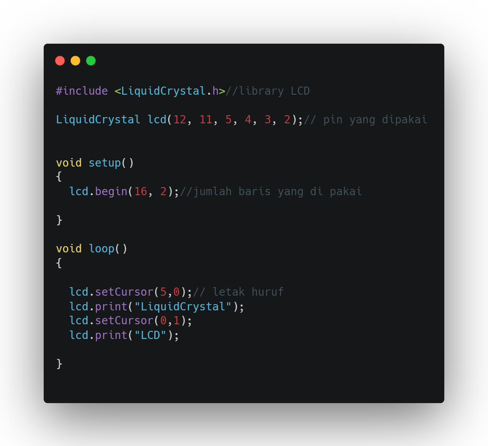

LCD (Liquid Crystal)
LCD atau Liquid Crystal Display pada dasarnya terdiri dari dua bagian utama yaitu bagian Backlight (Lampu Latar Belakang) dan bagian Liquid Crystal (Kristal Cair). Seperti yang disebutkan sebelumnya, LCD tidak memancarkan pencahayaan apapun, LCD hanya merefleksikan dan mentransmisikan cahaya yang melewatinya. Oleh karena itu, LCD memerlukan Backlight atau Cahaya latar belakang untuk sumber cahayanya. Cahaya Backlight tersebut pada umumnya adalah berwarna putih. Sedangkan Kristal Cair (Liquid Crystal) sendiri adalah cairan organik yang berada diantara dua lembar kaca yang memiliki permukaan transparan yang konduktif.
Backlight LCD yang berwarna putih akan memberikan pencahayaan pada Kristal Cair atau Liquid Crystal. Kristal cair tersebut akan menyaring backlight yang diterimanya dan merefleksikannya sesuai dengan sudut yang diinginkan sehingga menghasilkan warna yang dibutuhkan. Sudut Kristal Cair akan berubah apabila diberikan tegangan dengan nilai tertentu. Karena dengan perubahan sudut dan penyaringan cahaya backlight pada kristal cair tersebut, cahaya backlight yang sebelumnya adalah berwarna putih dapat berubah menjadi berbagai warna. Jika ingin menghasilkan warna putih, maka kristal cair akan dibuka selebar-lebarnya sehingga cahaya backlight yang berwarna putih dapat ditampilkan sepenuhnya. Sebaliknya, apabila ingin menampilkan warna hitam, maka kristal cair harus ditutup serapat-rapatnya sehingga tidak adalah cahaya backlight yang dapat menembus. Dan apabila menginginkan warna lainnya, maka diperlukan pengaturan sudut refleksi kristal cair yang bersangkutan.
Berikut rangkaian di tinkercad :

